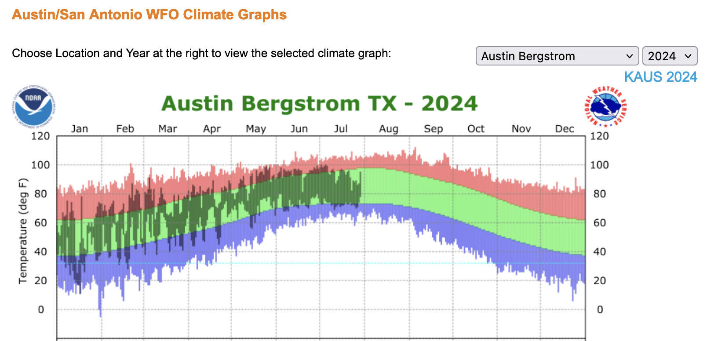
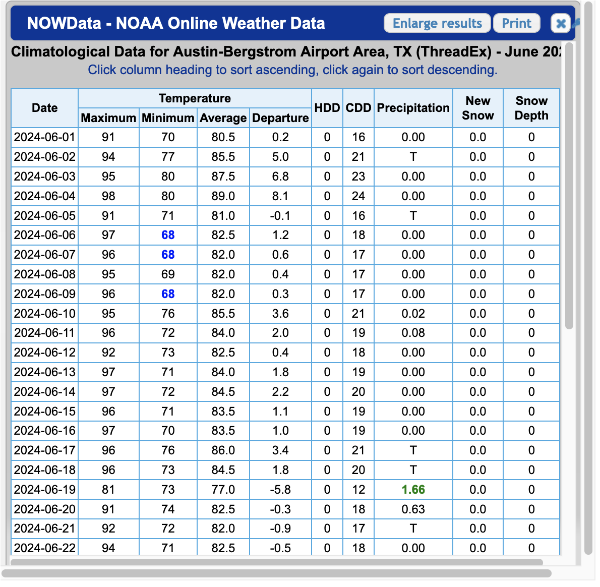
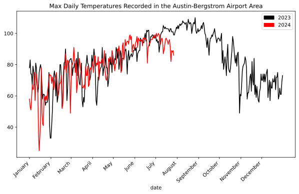

import os
import matplotlib.patches as mpatches
from matplotlib import pyplot as plt
import pandas as pd
import requests
def get_max_temps(year, limit=366):
token = os.getenv("NCDC_CDO_TOKEN")
start_date = f"{year}-01-01"
end_date = f"{year}-12-31"
url = "https://www.ncdc.noaa.gov/cdo-web/api/v2/data"
params = {
"datasetid": "GHCND",
"stationid": "GHCND:USW00013904",
"startdate": start_date,
"enddate": end_date,
"datatypeid": "TMAX", # max temp
"units": "standard", # 🇺🇸
"limit": limit,
}
headers = {
"token": token
}
response = requests.get(url, headers=headers, params=params)
data = response.json()
return dataI live in Austin, Texas. And last summer I felt like:

But this year, I’ve felt more like:
And earlier today I thought aloud to the group chat:
I need to look up if Austin is being weird this year. Last year we got to like 50 consecutive days over 100. I don’t think we’ve cracked 100 yet this year? Is there a website that answers this question?
Last year the heat was so bad that local news outlets were keeping a running tally of how many consecutive days we broke 100°F. It turns out we had 45 straight days of triple-digit heat in 2023, which began on July 8 and continued through August 22. I’m writing this on July 30, 2024 and I can’t recall a single day above 100°F yet this year.
Year-vs-year location based time series temperature data absolutely seems like a thing that should exist. Every month or so someone posts the updated doom surface air temperature graph, so surely I can just look that data up for my location, right?
On weather.gov you can get your own version of this graph. Pretty cool! But only for the current year:

You can also get tabular historic data within monthly windows that sometimes come as html and sometimes come as PDF. Also cool. But not convenient:

After about 15 minutes of clicking, I couldn’t find a great way to generate the viz I was looking for; and I couldn’t get an easy data export. Maybe there’s a one-click way to get CSVs, but I didn’t find it. But after about 5 more minutes of googling, I did find the National Oceanic and Atmostpheric Administration’s Climate Data Online portal, which has an API.
NCDC’s Climate Data Online (CDO) offers web services that provide access to current data. This API is for developers looking to create their own scripts or programs that use the CDO database of weather and climate data.
Hey, that sounds like me!
The API needs an access token. Wonderfully, all I needed to do was type in my email address and roughly one second later an access token landed in my inbox. LFG.
From here it took a bit more reading to grok what data is available and in what formats, but I eventually found out about GHCND, or the Global Historical Climatology Network daily:
The Global Historical Climatology Network daily (GHCNd) is an integrated database of daily climate summaries from land surface stations across the globe. GHCNd is made up of daily climate records from numerous sources that have been integrated and subjected to a common suite of quality assurance reviews.
That sounds like it might contain what I’m looking for.
Next, there are a lot of ways to filter this data by location, but stationid caught my attention. I found this list of GHCND stations and decided to go with AUSTIN BERGSTROM INTL AP because it’s the same location from the tabular data above. It has the identifier USW00013904.
After a quick pip install requests pandas matplotlib and tossing my token into a NCDC_CDO_TOKEN environment variable, we’re ready to jam.
First let’s get a function to grab some data. I’m intersted in comparing year over year, so let’s grab a year at a time.
Let’s look at the first three:
get_max_temps(2024, limit=3){
"metadata": {
"resultset": {
"offset": 1,
"count": 209,
"limit": 3
}
},
"results": [
{
"date": "2024-01-01T00:00:00",
"datatype": "TMAX",
"station": "GHCND:USW00013904",
"attributes": ",,W,2400",
"value": 58.0
},
{
"date": "2024-01-02T00:00:00",
"datatype": "TMAX",
"station": "GHCND:USW00013904",
"attributes": ",,W,2400",
"value": 53.0
},
{
"date": "2024-01-03T00:00:00",
"datatype": "TMAX",
"station": "GHCND:USW00013904",
"attributes": ",,W,2400",
"value": 51.0
}
]
}Great! We can pull from the date and the value fields. Let’s grab all of 2024 and shove it into a DataFrame.
def to_df(data):
# Extract date and truncate off the time part
dates = [item["date"][:10] for item in data["results"]]
# Grab the max temp value for each date
max_temps = [item["value"] for item in data["results"]]
# Create a DataFrame
df = pd.DataFrame({"date": dates,"max_temp": max_temps})
# Set the `date` col as a datetime and make it the index
df["date"] = pd.to_datetime(df["date"])
df.set_index("date", inplace=True)
return dfQuick spot check:
df_2024 = to_df(get_max_temps(2024))
print(f"Head:\n{df_2024.head()}")
print(f"Tail:\n{df_2024.tail()}")
print(f"Format:\n{df_2024.dtypes}")Head:
max_temp
date
2024-01-01 58.0
2024-01-02 53.0
2024-01-03 51.0
2024-01-04 58.0
2024-01-05 67.0
Tail:
max_temp
date
2024-07-23 82.0
2024-07-24 89.0
2024-07-25 88.0
2024-07-26 89.0
2024-07-27 86.0
Format:
max_temp float64
dtype: objectAwesome. I’m writing this on 2024-07-30 and it’s got data up through 2024-07-27. Good enough for me!
Now to actually get at what I was trying to do this whole time. I’m going to grab DataFrames for 2023 and 2024, and plot a time series of each.
df_2023 = to_df(get_max_temps(2023))
# Adjust 2023 dates to match the 2024 index
# This is how we shift the graph to overlap
# If you don't do this, 2024 comes after, not on top of, 2023
df_2023.index = df_2023.index.map(lambda x: x.replace(year=2024))
# Plot the data
fig, ax = plt.subplots(figsize=(10, 6))
df_2023.plot(ax=ax, color="black", legend="2023")
df_2024.plot(ax=ax, color="red", legend="2024")
# Sett x-axis to display month labels
ax.set_xticks(
pd.date_range(
start=df_2023.index.min(),
end=df_2023.index.max(),
freq='MS',
)
)
ax.set_xticklabels(
pd.date_range(
start=df_2023.index.min(),
end=df_2023.index.max(),
freq='MS',
).strftime('%B')
)
# Formatting
black_patch = mpatches.Patch(color="black", label="2023")
red_patch = mpatches.Patch(color="red", label="2024")
plt.legend(handles=[black_patch, red_patch])
ax.set_title("Max Daily Temperatures Recorded in the Austin-Bergstrom Airport Area")
plt.xticks(rotation=45)
plt.show()
So that’s pretty cool. Most of 2024 has tracked 2023 for daily high temperatures. But not July. July has been weirdly cooler than last year. Or last year was weirdly hotter than normal.
Actually, let’s see if we can tease that out. Let’s grab the past 10 years.
import time
# Create a dictionary of year:DataFrame
year_dfs = {}
for year in range(2014, 2024):
year_dfs[year] = to_df(get_max_temps(year))
# Be a nice internet citizen and wait between requests
time.sleep(5)
# Adjust pre-2024 dates to match the 2024 index
# This is how we shift the graph to overlap
# If you don't do this, 2024 comes after, not on top of, 2023
for df in year_dfs.values():
df.index = df.index.map(lambda x: x.replace(year=2024))
# Plot the data
fig, ax = plt.subplots(figsize=(10, 6))
for year, df in year_dfs.items():
if year == 2023:
df.plot(ax=ax, label="2023", color="gold")
else:
df.plot(ax=ax, color="gray")
df_2024.plot(ax=ax, label="2024", color="red")
# Sett x-axis to display month labels
ax.set_xticks(
pd.date_range(
start=year_dfs[2023].index.min(),
end=year_dfs[2023].index.max(),
freq='MS'
)
)
ax.set_xticklabels(
pd.date_range(
start=year_dfs[2023].index.min(),
end=year_dfs[2023].index.max(),
freq='MS',
).strftime('%B')
)
# Formatting
ax.set_title(
"Max Daily Temperatures Recorded in the Austin-Bergstrom Airport Area 2014 - 2024"
)
plt.xticks(rotation=45)
gold_patch = mpatches.Patch(color="gold", label="2023")
red_patch = mpatches.Patch(color="red", label="2024")
plt.legend(handles=[gold_patch, red_patch])
plt.show()
Seems like Austin’s 2023 summer was on the hotter side, and so far the 2024 summer is on the cooler side.
And was I correct that we haven’t cracked 100 yet this year?
print(df_2024[df_2024["max_temp"] >= 100]) max_temp
date
2024-07-02 100.0
2024-07-05 100.0Computers!